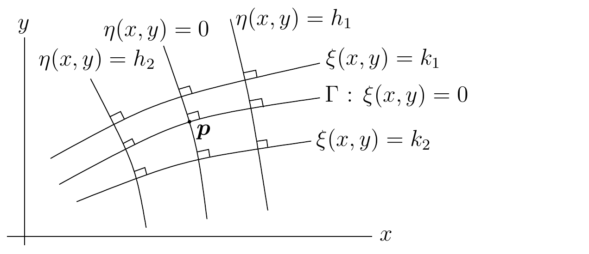

Klasifikasi -
Reduksi PDP Linear Orde Dua
Batas sumber. Bagian ini mengikat
classification.tex baris 1-167 pada sumber beku.
Klasifikasi Persamaan
Diferensial Parsial
Persamaan
Diferensial Parsial Linear Orde Dua pada Bidang
Misalkan
Γ \Gamma ℝ 2 \displaystyle\mathbb{R}^2 f : Γ → ℝ f:\Gamma\rightarrow \mathbb{R} g : Γ → ℝ g:\Gamma\rightarrow \mathbb{R}
L ( x , y , D ) = a 2 , 0 ( x , y ) ∂ 2 u ∂ x 2 ( x , y ) + 2 a 1 , 1 ( x , y ) ∂ 2 u ∂ x ∂ y ( x , y ) + a 0 , 2 ( x , y ) ∂ 2 u ∂ y 2 ( x , y ) + a 1 , 0 ( x , y ) ∂ u ∂ x ( x , y ) + a 0 , 1 ( x , y ) ∂ u ∂ y ( x , y ) + a 0 , 0 ( x , y ) u ( x , y ) + b ( x , y ) = 0 \begin{split}
& L(x,y,\mathrm{D}) = a_{2,0}(x,y) \frac{\displaystyle \partial^{2}{u}}{\displaystyle \partial x^{2}}(x,y) + 2a_{1,1}(x,y)
\frac{\displaystyle \partial^{2}{u}}{\displaystyle \partial x^{} \partial y^{}}(x,y) + a_{0,2}(x,y) \frac{\displaystyle \partial^{2}{u}}{\displaystyle \partial y^{2}}(x,y) \\
&\qquad + a_{1,0}(x,y) \frac{\partial{u}}{\partial x}(x,y)
+ a_{0,1}(x,y) \frac{\partial{u}}{\partial y}(x,y) + a_{0,0}(x,y)u(x,y) + b(x,y) = 0
\end{split} (2.1.1)
u | Γ = f dan ∂ u ∂ ν | Γ = g , u\big|_\Gamma = f \quad \text{dan} \quad
\frac{\partial{u}}{\partial \nu}\bigg|_\Gamma = g \ , (2.1.2) ν ( 𝒑 ) \displaystyle\nu\left(\boldsymbol{p}\right) 𝒑 ∈ Γ \boldsymbol{p} \in \Gamma Γ \Gamma 𝒑 \boldsymbol{p} 2.1.1 )
merupakan persamaan diferensial parsial linear orde
dua
.
Mula-mula kita mereduksi Masalah Cauchy (2.1.1 )
dan (2.1.2 )
menjadi masalah dengan
Γ \Gamma x x 𝒑 \boldsymbol{p} Γ \Gamma 𝒑 \boldsymbol{p} η ( x , y ) = h \eta(x,y)=h ξ ( x , y ) = k \xi(x,y)=k Γ \Gamma ξ ( x , y ) = 0 \xi(x,y)=0 2.1 ).
Kita juga dapat mengasumsikan bahwa
𝒑 \boldsymbol{p} ξ ( x , y ) = 0 \xi(x,y)=0 η ( x , y ) = 0 \eta(x,y)=0

Keluarga kurva ortogonal eta(x,y)=h dan
xi(x,y)=k memberikan perubahan koordinat untuk mereduksi persamaan
diferensial parsial linear orde dua ke bentuk baku.
Syarat agar dua keluarga kurva bersifat transversal di suatu
lingkungan
𝒑 \boldsymbol{p}
∂ ( η , ξ ) ∂ ( x , y ) = det ( ∂ η ∂ x ∂ η ∂ y ∂ ξ ∂ x ∂ ξ ∂ y ) ≠ 0 \frac{\partial (\eta, \xi)}{\partial (x,y)} =
\det\begin{pmatrix}
\displaystyle\frac{\partial{\eta}}{\partial x} & \displaystyle\frac{\partial{\eta}}{\partial y} \\[0.7em]
\displaystyle\frac{\partial{\xi}}{\partial x} & \displaystyle\frac{\partial{\xi}}{\partial y}
\end{pmatrix} \neq 0 (2.1.3) 𝒑 \boldsymbol{p} 𝒒 \boldsymbol{q} 𝒑 \boldsymbol{p}
∂ ( η , ξ ) ∂ ( x , y ) | 𝒒 = 0 ⇔ ( ∂ η ∂ x ( 𝒒 ) , ∂ η ∂ y ( 𝒒 ) ) ⋅ ( − ∂ ξ ∂ y ( 𝒒 ) , ∂ ξ ∂ x ( 𝒒 ) ) = 0 ⇔ ( − ∂ ξ ∂ y ( 𝒒 ) , ∂ ξ ∂ x ( 𝒒 ) ) ortogonal terhadap ( ∂ η ∂ x ( 𝒒 ) , ∂ η ∂ y ( 𝒒 ) ) ⇔ ( ∂ η ∂ x ( 𝒒 ) , ∂ η ∂ y ( 𝒒 ) ) sejajar dengan ( ∂ ξ ∂ x ( 𝒒 ) , ∂ ξ ∂ y ( 𝒒 ) ) \begin{aligned}
\frac{\partial (\eta, \xi)}{\partial (x,y)}\bigg|_{\boldsymbol{q}} = 0
& \Leftrightarrow
\left(\frac{\partial{\eta}}{\partial x}(\boldsymbol{q}),\frac{\partial{\eta}}{\partial y}(\boldsymbol{q})\right)
\cdot \left(-\frac{\partial{\xi}}{\partial y}(\boldsymbol{q}), \frac{\partial{\xi}}{\partial x}(\boldsymbol{q})\right) = 0 \\
& \Leftrightarrow
\left(-\frac{\partial{\xi}}{\partial y}(\boldsymbol{q}), \frac{\partial{\xi}}{\partial x}(\boldsymbol{q})\right) \
\text{ortogonal terhadap} \
\left(\frac{\partial{\eta}}{\partial x}(\boldsymbol{q}),\frac{\partial{\eta}}{\partial y}(\boldsymbol{q})\right) \\
& \Leftrightarrow
\left(\frac{\partial{\eta}}{\partial x}(\boldsymbol{q}),\frac{\partial{\eta}}{\partial y}(\boldsymbol{q})\right) \
\text{sejajar dengan} \
\left(\frac{\partial{\xi}}{\partial x}(\boldsymbol{q}),\frac{\partial{\xi}}{\partial y}(\boldsymbol{q})\right)
\end{aligned} ( − ∂ ξ ∂ y ( 𝒒 ) , ∂ ξ ∂ x ( 𝒒 ) ) \displaystyle\left(-\frac{\partial{\xi}}{\partial y}(\boldsymbol{q}), \frac{\partial{\xi}}{\partial x}(\boldsymbol{q})\right) ( ∂ ξ ∂ x ( 𝒒 ) , ∂ ξ ∂ y ( 𝒒 ) ) \displaystyle\left(\frac{\partial{\xi}}{\partial x}(\boldsymbol{q}),\frac{\partial{\xi}}{\partial y}(\boldsymbol{q})\right) ξ ( x , y ) = k \xi(x,y)=k η ( x , y ) = h \eta(x,y)=h 𝒒 \boldsymbol{q} 𝒒 \boldsymbol{q}
Berdasarkan (2.1.3 ),
kita dapat menggunakan Teorema Fungsi Invers untuk menyatakan
x x y y 𝒑 \boldsymbol{p} ξ \xi η \eta 2.1.1 ).
Jika kita substitusikan
u ( η , ξ ) = u ( x , y ) , ∂ u ∂ x = ∂ u ∂ ξ ∂ ξ ∂ x + ∂ u ∂ η ∂ η ∂ x , ∂ u ∂ y = ∂ u ∂ ξ ∂ ξ ∂ y + ∂ u ∂ η ∂ η ∂ y , ∂ 2 u ∂ x 2 = ∂ 2 u ∂ ξ 2 ( ∂ ξ ∂ x ) 2 + 2 ∂ 2 u ∂ η ∂ ξ ∂ η ∂ x ∂ ξ ∂ x + ∂ 2 u ∂ η 2 ( ∂ η ∂ x ) 2 + ∂ u ∂ ξ ∂ 2 ξ ∂ x 2 + ∂ u ∂ η ∂ 2 η ∂ x 2 , ∂ 2 u ∂ y 2 = ∂ 2 u ∂ ξ 2 ( ∂ ξ ∂ y ) 2 + 2 ∂ 2 u ∂ η ∂ ξ ∂ η ∂ y ∂ ξ ∂ y + ∂ 2 u ∂ η 2 ( ∂ η ∂ y ) 2 + ∂ u ∂ ξ ∂ 2 ξ ∂ y 2 + ∂ u ∂ η ∂ 2 η ∂ y 2 dan ∂ 2 u ∂ x ∂ y = ∂ 2 u ∂ ξ 2 ∂ ξ ∂ x ∂ ξ ∂ y + ∂ 2 u ∂ η ∂ ξ ∂ η ∂ y ∂ ξ ∂ x + ∂ 2 u ∂ η ∂ ξ ∂ η ∂ x ∂ ξ ∂ y + ∂ 2 u ∂ η 2 ∂ η ∂ x ∂ η ∂ y + ∂ u ∂ ξ ∂ 2 ξ ∂ y ∂ x + ∂ u ∂ η ∂ 2 η ∂ y ∂ x \begin{aligned}
u(\eta,\xi) & = u(x,y) \ , \quad
\ \frac{\partial{u}}{\partial x} = \frac{\partial{u}}{\partial \xi}\frac{\partial{\xi}}{\partial x} +
\frac{\partial{u}}{\partial \eta}\frac{\partial{\eta}}{\partial x} \ , \quad
\ \frac{\partial{u}}{\partial y} = \frac{\partial{u}}{\partial \xi}\frac{\partial{\xi}}{\partial y} +
\frac{\partial{u}}{\partial \eta}\frac{\partial{\eta}}{\partial y} \ ,\\
\frac{\displaystyle \partial^{2}{u}}{\displaystyle \partial x^{2}} &= \frac{\displaystyle \partial^{2}{u}}{\displaystyle \partial \xi^{2}} \left(\frac{\partial{\xi}}{\partial x}\right)^2 +
2\frac{\displaystyle \partial^{2}{u}}{\displaystyle \partial \eta^{} \partial \xi^{}}\frac{\partial{\eta}}{\partial x}\frac{\partial{\xi}}{\partial x}
+ \frac{\displaystyle \partial^{2}{u}}{\displaystyle \partial \eta^{2}}\left(\frac{\partial{\eta}}{\partial x}\right)^2 +
\frac{\partial{u}}{\partial \xi} \frac{\displaystyle \partial^{2}{\xi}}{\displaystyle \partial x^{2}} + \frac{\partial{u}}{\partial \eta}\frac{\displaystyle \partial^{2}{\eta}}{\displaystyle \partial x^{2}} \ ,\\
\frac{\displaystyle \partial^{2}{u}}{\displaystyle \partial y^{2}} &= \frac{\displaystyle \partial^{2}{u}}{\displaystyle \partial \xi^{2}} \left(\frac{\partial{\xi}}{\partial y}\right)^2 +
2\frac{\displaystyle \partial^{2}{u}}{\displaystyle \partial \eta^{} \partial \xi^{}}\frac{\partial{\eta}}{\partial y}\frac{\partial{\xi}}{\partial y}
+ \frac{\displaystyle \partial^{2}{u}}{\displaystyle \partial \eta^{2}}\left(\frac{\partial{\eta}}{\partial y}\right)^2 +
\frac{\partial{u}}{\partial \xi} \frac{\displaystyle \partial^{2}{\xi}}{\displaystyle \partial y^{2}} + \frac{\partial{u}}{\partial \eta}\frac{\displaystyle \partial^{2}{\eta}}{\displaystyle \partial y^{2}}
\\ &\text{dan}\\
\frac{\displaystyle \partial^{2}{u}}{\displaystyle \partial x^{} \partial y^{}} &= \frac{\displaystyle \partial^{2}{u}}{\displaystyle \partial \xi^{2}}
\frac{\partial{\xi}}{\partial x}\frac{\partial{\xi}}{\partial y} +
\frac{\displaystyle \partial^{2}{u}}{\displaystyle \partial \eta^{} \partial \xi^{}}\frac{\partial{\eta}}{\partial y}\frac{\partial{\xi}}{\partial x}
+\frac{\displaystyle \partial^{2}{u}}{\displaystyle \partial \eta^{} \partial \xi^{}}\frac{\partial{\eta}}{\partial x}\frac{\partial{\xi}}{\partial y}
+\frac{\displaystyle \partial^{2}{u}}{\displaystyle \partial \eta^{2}}\frac{\partial{\eta}}{\partial x}\frac{\partial{\eta}}{\partial y} +
\frac{\partial{u}}{\partial \xi} \frac{\displaystyle \partial^{2}{\xi}}{\displaystyle \partial y^{} \partial x^{}}
+ \frac{\partial{u}}{\partial \eta}\frac{\displaystyle \partial^{2}{\eta}}{\displaystyle \partial y^{} \partial x^{}}
\end{aligned} 2.1.1 ),
maka diperoleh
A 2 , 0 ∂ 2 u ∂ η 2 + 2 A 1 , 1 ∂ 2 u ∂ η ∂ ξ + A 0 , 2 ∂ 2 u ∂ ξ 2 + A 1 , 0 ∂ u ∂ η + A 0 , 1 ∂ u ∂ ξ + A 0 , 0 u + B = 0 , A_{2,0} \frac{\displaystyle \partial^{2}{u}}{\displaystyle \partial \eta^{2}}
+ 2A_{1,1}\frac{\displaystyle \partial^{2}{u}}{\displaystyle \partial \eta^{} \partial \xi^{}}
+ A_{0,2}\frac{\displaystyle \partial^{2}{u}}{\displaystyle \partial \xi^{2}}
+ A_{1,0} \frac{\partial{u}}{\partial \eta}
+ A_{0,1} \frac{\partial{u}}{\partial \xi} + A_{0,0} u + B = 0 \ , (2.1.4)
A 2 , 0 ( η , ξ ) = a 2 , 0 ( ∂ η ∂ x ) 2 + 2 a 1 , 1 ∂ η ∂ x ∂ η ∂ y + a 0 , 2 ( ∂ η ∂ y ) 2 , A 1 , 1 ( η , ξ ) = a 2 , 0 ∂ η ∂ x ∂ ξ ∂ x + a 1 , 1 ( ∂ η ∂ y ∂ ξ ∂ x + ∂ η ∂ x ∂ ξ ∂ y ) + a 0 , 2 ∂ η ∂ y ∂ ξ ∂ y , A 0 , 2 ( η , ξ ) = a 2 , 0 ( ∂ ξ ∂ x ) 2 + 2 a 1 , 1 ∂ ξ ∂ x ∂ ξ ∂ y + a 0 , 2 ( ∂ ξ ∂ y ) 2 , A 1 , 0 ( η , ξ ) = a 2 , 0 ∂ 2 η ∂ x 2 + 2 a 1 , 1 ∂ 2 η ∂ x ∂ y + a 0 , 2 ∂ 2 η ∂ y 2 + a 1 , 0 ∂ η ∂ x + a 0 , 1 ∂ η ∂ y , A 0 , 1 ( η , ξ ) = a 2 , 0 ∂ 2 ξ ∂ x 2 + 2 a 1 , 1 ∂ 2 ξ ∂ x ∂ y + a 0 , 2 ∂ 2 ξ ∂ y 2 + a 1 , 0 ∂ ξ ∂ x + a 0 , 1 ∂ ξ ∂ y , A 0 , 0 ( η , ξ ) = a 0 , 0 dan B ( η , ξ ) = b ( x , y ) \begin{aligned}
A_{2,0}(\eta,\xi) &= a_{2,0}\, \left(\frac{\partial{\eta}}{\partial x}\right)^2
+2a_{1,1}\,\frac{\partial{\eta}}{\partial x}\frac{\partial{\eta}}{\partial y}
+ a_{0,2}\, \left(\frac{\partial{\eta}}{\partial y}\right)^2 \ , \\
A_{1,1}(\eta,\xi) &= a_{2,0}\, \frac{\partial{\eta}}{\partial x}\frac{\partial{\xi}}{\partial x} + a_{1,1}\,
\left(\frac{\partial{\eta}}{\partial y}\frac{\partial{\xi}}{\partial x}+\frac{\partial{\eta}}{\partial x}\frac{\partial{\xi}}{\partial y}\right)
+ a_{0,2}\, \frac{\partial{\eta}}{\partial y}\frac{\partial{\xi}}{\partial y} \ , \\
A_{0,2}(\eta,\xi) &= a_{2,0}\,\left(\frac{\partial{\xi}}{\partial x}\right)^2
+ 2a_{1,1}\, \frac{\partial{\xi}}{\partial x}\frac{\partial{\xi}}{\partial y}
+ a_{0,2}\,\left(\frac{\partial{\xi}}{\partial y}\right)^2 \ , \\
A_{1,0}(\eta,\xi) &= a_{2,0}\,\frac{\displaystyle \partial^{2}{\eta}}{\displaystyle \partial x^{2}} +
2a_{1,1}\,\frac{\displaystyle \partial^{2}{\eta}}{\displaystyle \partial x^{} \partial y^{}} + a_{0,2}\, \frac{\displaystyle \partial^{2}{\eta}}{\displaystyle \partial y^{2}}
+a_{1,0} \, \frac{\partial{\eta}}{\partial x} + a_{0,1}\,\frac{\partial{\eta}}{\partial y} \ , \\
A_{0,1}(\eta,\xi) &= a_{2,0}\,\frac{\displaystyle \partial^{2}{\xi}}{\displaystyle \partial x^{2}} +
2a_{1,1}\,\frac{\displaystyle \partial^{2}{\xi}}{\displaystyle \partial x^{} \partial y^{}} + a_{0,2}\, \frac{\displaystyle \partial^{2}{\xi}}{\displaystyle \partial y^{2}}
+a_{1,0} \, \frac{\partial{\xi}}{\partial x} + a_{0,1}\,\frac{\partial{\xi}}{\partial y} \ , \\
A_{0,0}(\eta,\xi) &= a_{0,0} \quad \text{dan} \quad
B(\eta,\xi) = b(x,y)
\end{aligned} ( x , y ) = ( x ( η , ξ ) , y ( η , ξ ) ) (x,y) = \left(x(\eta,\xi),y(\eta,\xi)\right)
Kita memilih orientasi
ξ \xi ν = ∇ ξ / ‖ ∇ ξ ‖ \nu=\nabla\xi/\lVert\nabla\xi\rVert Γ \Gamma 2.1.2 )
menjadi
u ( η , 0 ) = f ( x ( η , 0 ) , y ( η , 0 ) ) dan ∂ u ∂ ξ ( η , 0 ) = g ( x ( η , 0 ) , y ( η , 0 ) ) ∥ ∇ ξ ( x ( η , 0 ) , y ( η , 0 ) ) ∥ . u(\eta,0) = f\left(x(\eta,0),y(\eta,0)\right) \quad \text{dan} \quad
\frac{\partial{u}}{\partial \xi}(\eta,0) =
\frac{g\left(x(\eta,0),y(\eta,0)\right)}
{\left\lVert\nabla\xi\left(x(\eta,0),y(\eta,0)\right)\right\rVert} \ . (2.1.5)
Sebagaimana akan kita lihat dalam Bab 3 ,
untuk menentukan ekspansi deret solusi
u u 2.1.4 )
dan (2.1.5 )
di suatu lingkungan titik asal pada bidang
η \eta ξ \xi 𝒑 \boldsymbol{p} x x y y ∂ j u ∂ ξ j \displaystyle\frac{\displaystyle \partial^{j}{u}}{\displaystyle \partial \xi^{j}} j ≥ 2 j\geq 2 2.1.4 )
dapat diselesaikan terhadap
∂ 2 u ∂ ξ 2 \displaystyle\frac{\displaystyle \partial^{2}{u}}{\displaystyle \partial \xi^{2}} ( η , ξ ) = ( 0 , 0 ) (\eta,\xi)=(0,0)
A 0 , 2 ( 0 , 0 ) = a 2 , 0 ( 𝒑 ) ( ∂ ξ ∂ x ( 𝒑 ) ) 2 + 2 a 1 , 1 ( 𝒑 ) ∂ ξ ∂ x ( 𝒑 ) ∂ ξ ∂ y ( 𝒑 ) + a 0 , 2 ( 𝒑 ) ( ∂ ξ ∂ y ( 𝒑 ) ) 2 ≠ 0 . A_{0,2}(0,0) = a_{2,0}(\boldsymbol{p})\, \left(\frac{\partial{\xi}}{\partial x}(\boldsymbol{p})\right)^2
+2a_{1,1}(\boldsymbol{p})\,\frac{\partial{\xi}}{\partial x}(\boldsymbol{p})\,\frac{\partial{\xi}}{\partial y}(\boldsymbol{p})
+ a_{0,2}(\boldsymbol{p})\, \left(\frac{\partial{\xi}}{\partial y}(\boldsymbol{p})\right)^2
\neq 0 \ . (2.1.6)
Sebelum beralih ke bagian berikutnya, kita mencatat bahwa
A 1 , 1 2 − A 2 , 0 A 0 , 2 = ( a 1 , 1 2 − a 2 , 0 a 0 , 2 ) ( ∂ η ∂ x ∂ ξ ∂ y − ∂ η ∂ y ∂ ξ ∂ x ) 2 A_{1,1}^2 - A_{2,0}\,A_{0,2} = \left(a_{1,1}^2 - a_{2,0}a_{0,2}\right)
\left( \frac{\partial{\eta}}{\partial x}\frac{\partial{\xi}}{\partial y} - \frac{\partial{\eta}}{\partial y}\frac{\partial{\xi}}{\partial x}
\right)^2 (2.1.7) ( η , ξ ) (\eta,\xi) ( x , y ) = ( x ( η , ξ ) , y ( η , ξ ) ) (x,y) = \left(x(\eta,\xi),y(\eta,\xi)\right)
Atribusi dan hak. Karya sumber oleh Benoit Dionne
dilisensikan berdasarkan Creative
Commons Attribution-NonCommercial-ShareAlike 4.0 International .
Terjemahan dan perubahan yang dicatat menggunakan lisensi komponen yang
sama. Produksi terjemahan dan edisi dibantu OpenAI Codex gpt-5.6-sol,
Ultra; semua kredit penulis dan kontributor manusia tetap dipertahankan.
Ini bukan terbitan atau dukungan resmi Benoit Dionne maupun University
of Ottawa.